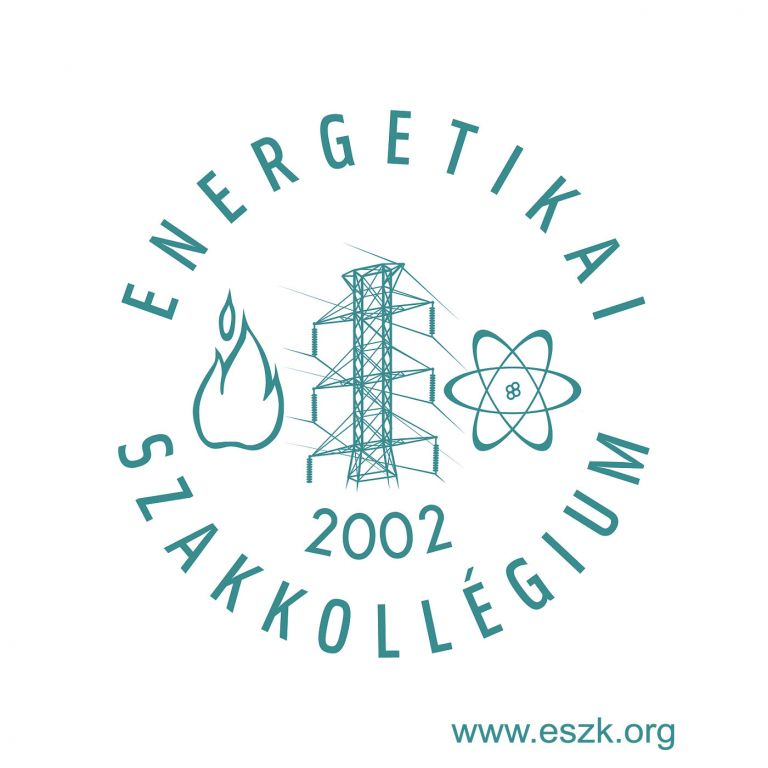

Szakmai tevékenységek
Energetikai Szakkollégium
 2020 szeptemberében csatlakoztam az Energetikai Szakkollégiumhoz, a BME egyik öntevékeny köréhez. A szervezet célja, hogy az embereket megismertesse az energetika színes világával, népszerűsítse a fenntarthatóságot. Tagságommal én is ezeket a célokat tartom szem előtt.